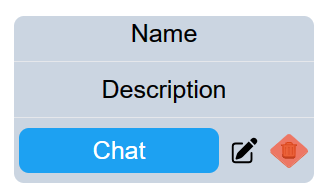

if you created a room you can see it here also you can edit or delete it. You will see this type of room after creating it 
If chat is yours you can edit or delete it by clicking on it. You will see this type of dropdown menu after clicking on chat